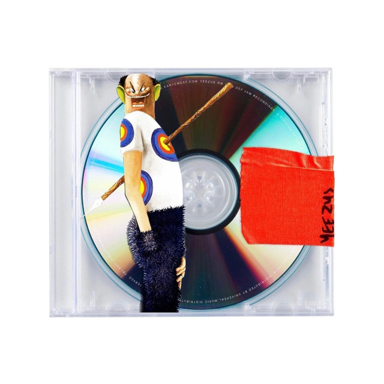

"Send It Up" é penúltima música do álbum. A música tem vocais sem crédito de King Louie
Na música, Ye e Louie cantam sobre seus estilos de vida rica e boêmia

"Send It Up" é penúltima música do álbum. A música tem vocais sem crédito de King Louie
Na música, Ye e Louie cantam sobre seus estilos de vida rica e boêmia
[Intro: Beenie Man] Relivin' the past? Your loss [Verso 1: King Louie] Rockstar, bitch, call me Elvis M.O.B, she call me selfish Success got 'em jealous Shorty's killin', while I'm drillin' Tattoos, how they break the news It was real if you made the news Last night, my bitches came in twos And they both sucked like they came to lose Dropped out first day of school 'Cause niggas got cocaine to move I be goin' hard, I got a name to prove Killin' 'em, honey, how I make the pain improve [Coro: King Louie] We can send this bitch up, it can't go down We can send this bitch up, it can't go down We can send this bitch up, it can't go down We can send this bitch up, it can't go down [Interlúdio: Kanye West] Woo, woo Woo, woo [Coro: King Louie & Kanye West ] We can send this bitch up, it can't go down We can send this bitch up, it can't go down We can send this bitch up, it can't go down We can send this bitch up, it can't go down ( Woo ) [Verso 2: Kanye West] This the craziest shit in the club (Woo) Since "In Da Club" (Woo) It's so packed, I might ride around on my bodyguard's back like Prince in the club She say, "Can you get my friends in the club?" I say, "Can you get my Benz in the club?" If not, treat your friends like my Benz Park they ass outside 'til the evenin' end When I go raw, I like to leave it in When I wake up, I like to go again When I go to work, she gotta call it in She can't go to work, same clothes again And her heart colder than the soles I'm in Louboutin on the toes again Tight dress dancin' close to him Yeezus just rose again [Coro: King Louie] We can send this bitch up, it can't go down We can send this bitch up, it can't go down We can send this bitch up, it can't go down We can send this bitch up, it can't go down [Outro: Beenie Man] Memories don't leave like people do They always 'member you Whether things are good or bad It's just the memories that you have Memories don't leave like people do They always 'member you Whether things are good or bad It's just the memories that you have